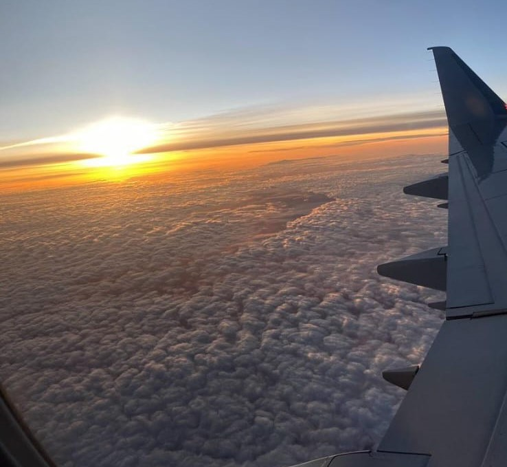
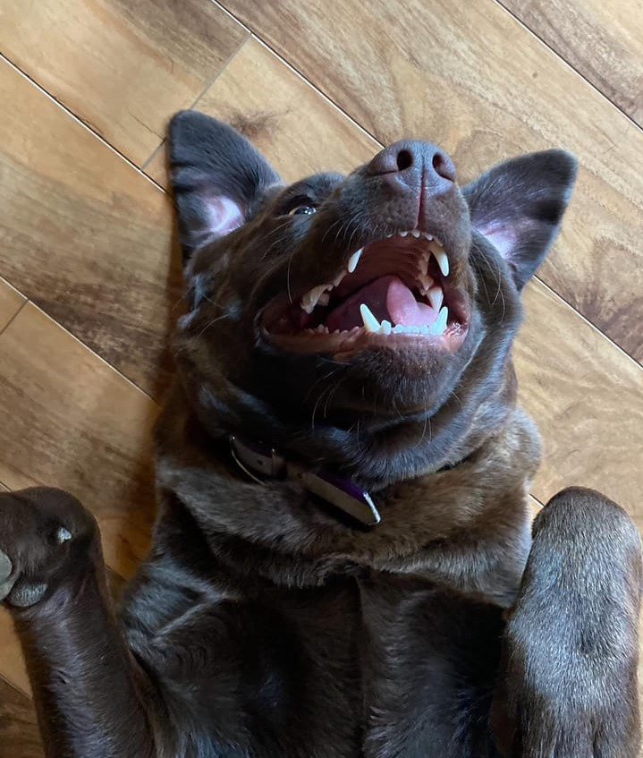

I.. writing you, liraly

Name:Kaylah Raine Tedeshchi or Kay Kay.. or for me "fastasminha or vovozinha".
born:09/06/2008
It all started on the 25th of July between 8pm and 11pm... When by coincidence we met...
All my discoveries about you
First I will say silly things:
1º You have a lake house! (), 2ºDid you want to study in the medical field or just study business for the future!, but you were undecided,
3º You are no denominational christian, 4º YOU EAT SNOWW, 5º Your favorite colors are white and lilac, 6º do you know how to make cookies, hmmm delicius ksskss,
6º you play all sports, that's amazingg, 7ºyou are veryy curiouss, 8º You are a "fantasminha and a vovozinha" for me, and you know why, 9º you are a great photographerr,
10º You weree baptized on August 13, 2023, I wrote it here because it was a special moment for you, 11º You love animals and have two cats, a dog and rabbits tooo,
11º you are a professional singerrr, 12º Her favorite subjects are English and Biolog 13ºto wrap it up for now... besides you being extremely beautiful and having a lovely smile...
you are an amazing person... you are a great teacherr!!
Your tastes
Promise Numbers: "15"
Promises:
I'm not sure if I put them all here, AAAAAA
The photos you sent me that I love... and why I love them...

The first image was the first photo you sent me... it was at your family's christening... that's why I love this photo... there's a context
The second photo was when I found out that you have a house on the lake... this always reminds me of all the movies and series I watched on netflix
The tree picture. I like this photo... because you sent it to me and it gives me an idea of what it's like to be on a plane.. probably when I go there it will be the first time I get on a plane
I love the fourth one because snow seems to be something incredible... you made snow even more incredible for me by saying many things about it.. including the absurdity.. that you eat snow!!
The first photo made me realize how similar we are... it was in this photo that I commented that I liked to imagine what the person was thinking at the moment... you said that you had said the same thing to your friends..
The second one makes you even more special... it was on your baptism day and in our generation that's pretty amazing.
The tree, was at a prom... I like this photo because his brother looks like a bad boy... like in movies that show teenagers at school.. his brother would be the bully, but he's kind and sweet inside
The fourth makes you a little less like me... you love cats... and I literally have allergies...
I'm going to talk generally about these pictures from when you were in Virginia Beach... These are my FAVORITE pictures! They make me feel something so special.. I can imagine watching that sunset.. and walking on the soft, snow-white sand... But for me, the last one is my favorite.. She makes me feel super special. ! It will be the background of my cell phone.. Through it I can feel as if there was a piece of me there.. even being far away, it makes me feel close.

I loved the first picture because I love dogs too and your liking dogs and cats shows a little bit of who you are... people who like dogs can't even be considered normal people. are angels
I just love this video.. that was the day I found out that you have an angelic voice..
The third would be the video of you inviting me to live there... well, at least it was the attempt ksksks, I tried to put it here because who knows in the future you'll be fluent in Portuguese and you'll be able to laugh a little about it
The fourth was the day I found out that your eyes are as blue as the sky.. This is so amazing
When you're having a sad day
Then I'll try to put my messege voice or videos in Portuguese... but you'll have to promise me that you'll only listen when you're sad!, later I will show you a way to listen or translate voice messages and videos in real time
For now, I'm going to leave here two phrases that I always say
"Tomorrow could be the best day of your life!!"
"Nothing is bad enough that it can't get worse." ksksk
And I also like to think that if God allowed you to be alive today, it's because he still has something for you.
Endd kskskks